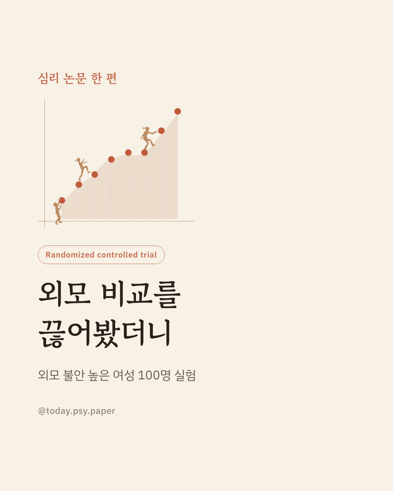
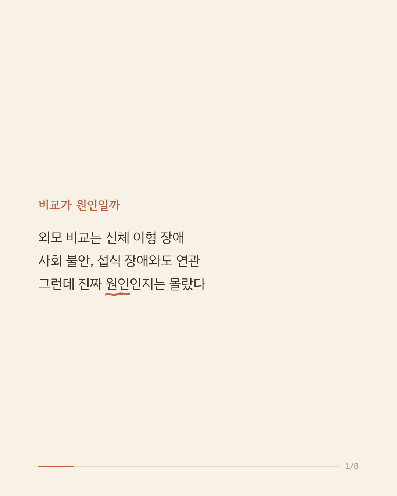
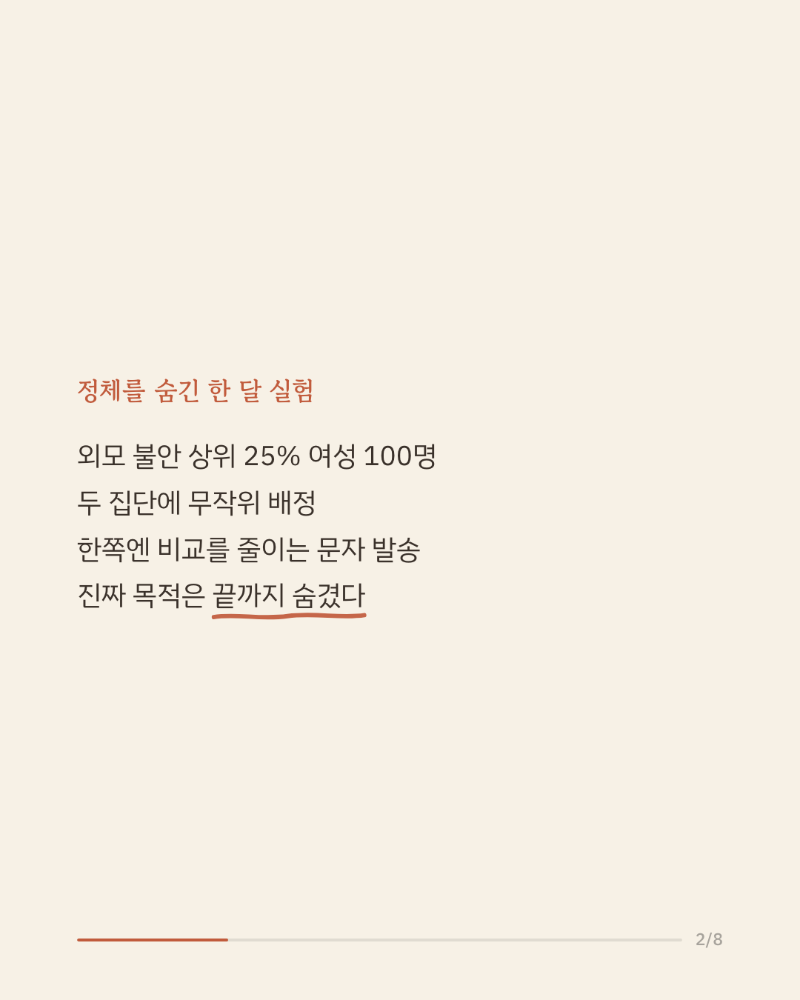
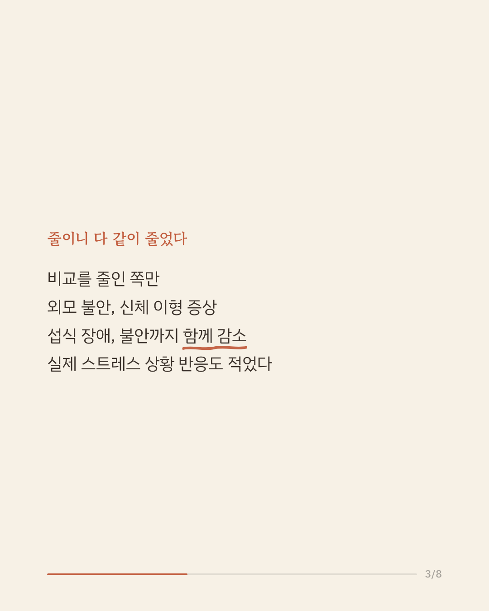
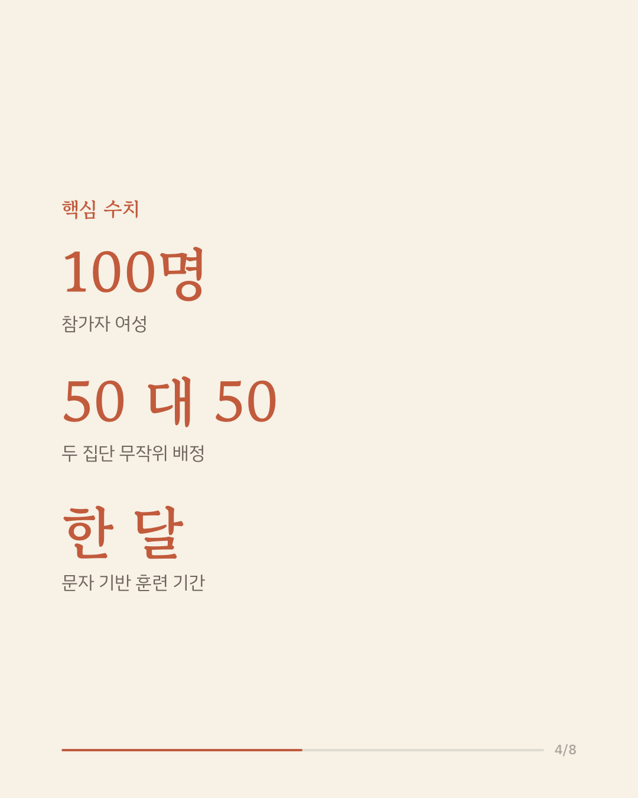
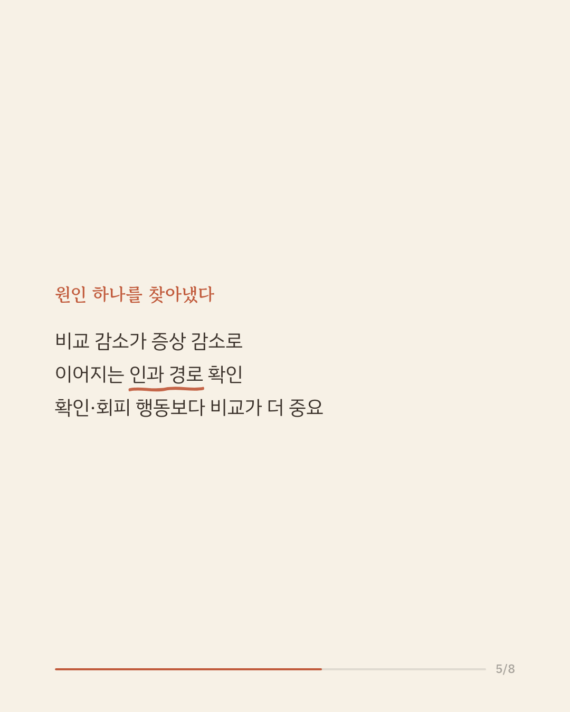
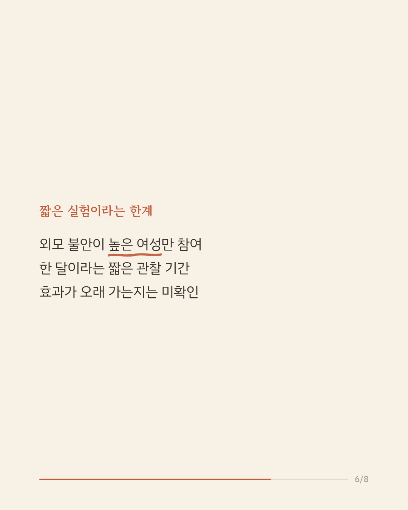
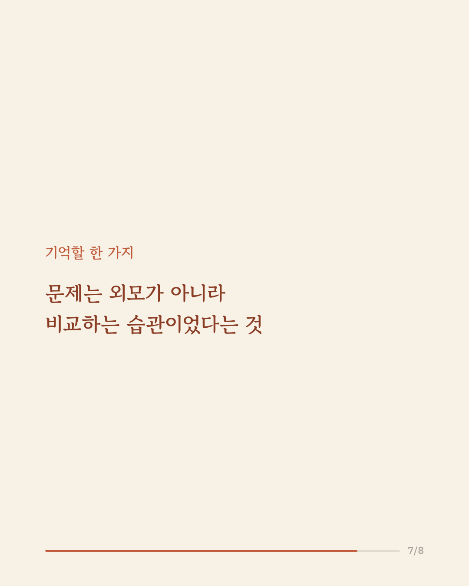
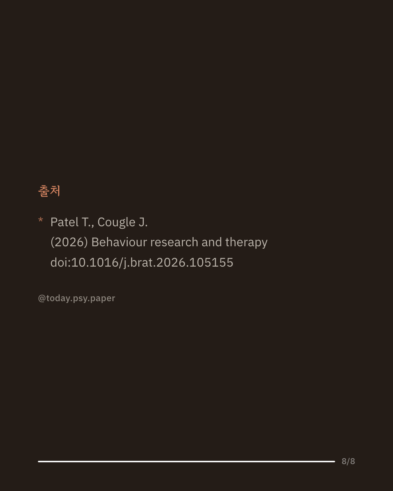

외모에 대한 불안이 큰 사람일수록 다른 사람과 자신의 외모를 비교하는 일이 잦습니다. 이런 외모 비교는 신체 이형 장애, 사회 불안장애, 섭식 장애 증상과 함께 나타난다고 알려져 있었지만, 비교가 정말 증상의 원인인지는 분명하지 않았습니다. 연구팀은 외모 불안이 상위 25%에 해당하는 여성 100명을 모집해 두 집단으로 무작위 배정했습니다. 한 집단에는 한 달간 문자메시지를 통해 외모 비교 행동을 줄이도록 유도했고, 다른 집단은 비교 행동을 기록만 하도록 했습니다. 연구의 진짜 목적은 참가자에게 알리지 않았습니다. 한 달 뒤, 비교를 줄인 집단은 외모 불안과 외모에 대한 중요도, 신체 이형 장애·섭식 장애 증상, 특성 불안까지 모두 낮아졌습니다. 통계 분석 결과 외모 비교의 감소가 증상 개선으로 이어지는 경로도 확인되어, 비교 행동이 단순한 동반 현상이 아니라 증상을 유지시키는 원인 중 하나일 가능성을 보여줍니다. 다만 참가자는 모두 외모 불안이 높은 젊은 여성이었고, 관찰 기간도 한 달로 짧았습니다. 출처: Behaviour Research and Therapy (2026), 'Is appearance-related social comparison a causal mechanism underlying appearance-related psychopathology among young adult women? An experimental test.' #임상심리 #외모불안 #신체이미지 #섭식장애심리
python3 publish.py 42748514